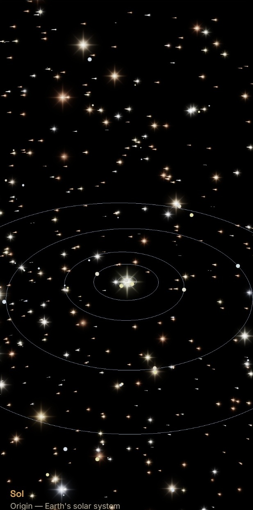

Exoplanet Viewer
LaunchA sky full of neighbours
For most of human history, planets meant our planets — Mercury through Neptune, and the odd companion of Sol. In 1992, astronomers confirmed planets around a distant pulsar; in October 1995, Michel Mayor and Didier Queloz found 51 Pegasi b, the first confirmed world orbiting a Sun-like star, and opened the modern age of exoplanet science. Thirty years later, NASA’s Exoplanet Archive lists more than 6,000 confirmed planets, with thousands more candidates still awaiting confirmation — and the pace of discovery keeps accelerating.
Those numbers are only a sample of what is out there. Surveys suggest that most stars host planets, and that roughly one in five Sun-like stars may have an Earth-sized world in the habitable zone — the “Goldilocks” region where liquid water could exist on a surface. Fold in the galaxy’s abundant red dwarfs and estimates climb toward tens of billions of potentially temperate rocky worlds in the Milky Way alone. We have not visited any of them... just yet...
Exoplanet Viewer shows you visually where all of the known exoplanets are relative to our home star system. For the rendering the visual sizes of stars, planets and orbits have been enlarged to make the map more interesting, but you can fly between systems and observe some of the more famous extrasolar planetary systems like Trappist I!
All star systems are shown up to 30 parsecs from Earth, which helps to give you a feel for quite how common exoplanets are in the nearby star systems where we've had the most time to search for exoplanets.
Data sources
| Dataset | Source | Role in the app |
|---|---|---|
| Exoplanet hosts & planets | NASA Exoplanet Archive PSCompPars (via TAP) | Positions (RA/Dec/distance), stellar parameters, orbital elements, planet sizes/masses, discovery metadata |
| Nearby field stars | Gaia DR3 (TAP) | Optional overlay of stars within ~30 pc of Sol that are not known exoplanet hosts — for local context |
Orbital geometry for exoplanets uses published elements where available; some angles (notably longitude of ascending node) are filled with stable, system-local defaults when the archive does not publish them. Habitable-zone tagging is an approximate luminosity-scaled “recent Venus / early Mars” style band — a schematic guide for exploration, not a mission-selection claim.
Gallery